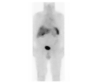

Understanding GI NET
What Are GI NET?
Gastrointestinal neuroendocrine tumors (GI NET) are also called carcinoid tumors of the GI tract. They are a rare type of cancer that can start in different parts of your digestive system, called the GI system. The GI system includes the stomach, small intestine, colon, and rectum.
GI NET are different from other cancers of the GI tract, because they form in cells of the neuroendocrine system. Neuroendocrine cells are part of your body’s normal “control system.” When your brain and nervous system send messages, neuroendocrine cells release hormones and other chemical messengers to control bodily functions like digestion, reproduction, airflow to the lungs, and responses to stress or injury.
Most of the time, GI NET are small and may be hard to find. Sometimes they are found during other procedures, such as a colonoscopy or surgery for other conditions.
Even though GI NET are usually small and slow-growing, over time they can spread (metastasize) to other parts of the body, like the liver or bone.
In fact, 30% to 70% of patients present with progressive disease, which means the tumors have already spread from the primary site to another part of the body.
A NET may have spread before being discovered, because some NET:
-
Are hard to find until they have grown or spread
-
Don't cause symptoms until they have grown or spread
-
Cause symptoms that make them seem like other diseases, so they may take longer to be diagnosed
Tumors growing and/or spreading is considered "disease progression."
Disease progression can be regional, which means it is in a nearby lymph node, or it may spread to another organ, like the liver. A cancer that has spread is considered metastatic.
Symptoms caused by functional and nonfunctional GI tumors
Some GI NET cause symptoms because they produce large amounts of hormones. Others cause symptoms when they grow and spread (metastasize).
GI NET that release hormones are sometimes described as “functional.” GI NET that do not release hormones can be called “nonfunctional.”
Nonfunctional NET in your GI tract may cause symptoms such as pain or bloating as the tumor grows.
Functional NET in your GI tract are more commonly seen in the small intestine. They may cause symptoms of carcinoid syndrome, like:
-
Turning red and feeling warm in your face, neck, or chest (flushing)
-
Diarrhea
-
Heart disease
-
Wheezing
Carcinoid syndrome
Carcinoid syndrome occurs when a GI NET releases excessive amounts of hormones, such as serotonin. This may result in a variety of symptoms. Fewer than 10% of people with GI NET have some or all of the symptoms of carcinoid syndrome.
Diagnosis & Management of GI NET
Diagnosis of GI NET
Because GI NET are very uncommon and tend to be small and slow-growing, they can be hard to diagnose. Sometimes patients experience vague symptoms for years before the tumor is discovered. In many cases, patients may have been misdiagnosed with irritable bowel syndrome (IBS) or other common disorders before the NET was discovered.
In fact, in a global survey of patients who received a NET diagnosis, about 40% said they were initially diagnosed with a digestive disorder, such as IBS.
There are several tests that your doctor can use to help diagnose GI NET and to monitor it once it has been diagnosed. It’s important to be monitored regularly for changes in your symptoms or test results. Regular doctor visits will also help you get the best possible outcome.
Tests that can help confirm a GI NET diagnosis
Click each tab below to learn about how these tests are performed.
Imaging Tests
Imaging tests use specialized machines to look at your organs and tissues. These tests may help with diagnosis of NET or to find out whether the tumor has grown or changed.
Computed Tomography

A computed tomography (CT) scan shows the location and size of your tumor. Being scanned over time will help your doctor tell if your tumor has grown, changed, or spread.
How the test is performed
If your doctor orders your test with "contrast," you will either drink a fluid or receive an intravenous (IV) injection before the test. Contrast helps certain areas show up in the images. A CT scanner is shaped like a large doughnut standing on its side. You will lie on a table that slides you into the doughnut hole while the scanner takes pictures. You may also hear clicking or whirring noises. You may need to hold your breath to ensure the pictures are clear.
Magnetic Resonance Imaging

A magnetic resonance imaging (MRI) scan shows the difference between healthy tissue and a tumor. Being scanned over time will help your doctor tell if your tumor has grown, changed, or spread.
How the test is performed
If your doctor orders your test with "contrast," you will get an IV injection before the test. Contrast helps certain areas show up better in the images. During the test, you will lie on a table while the machine takes pictures. It may make clicking or beeping noises. You need to stay very still to ensure the images are clear.
Octreoscan™

An Octreoscan™ may help find a tumor that may not have been seen by other tests. Being scanned over time will help your doctor tell if your tumor has spread.
How the test is performed
Before the test, you will get an injection to place a "tracer" into your body. The tracer helps certain areas show up better in the images. You will lie on your back during the scan while the machine takes pictures. You can breathe normally and need to stay still to help ensure the images are clear.
Octreoscan is a trademark of Mallinckrodt Nuclear Medicine LLC.
Gallium Scan

A gallium scan is an imaging test that uses a small amount of a radioactive tracer to help find NET that may otherwise be missed.
How the test is performed
Before the test, your doctor will advise you to drink plenty of water to make sure that you are well hydrated. Then you will receive an IV infusion that contains the tracer solution. You will be instructed to lie still while your body is scanned by a positron emission tomography (PET) device.
After the scan is completed, you will be instructed to drink plenty of water and urinate frequently to flush the radioactive tracer out of your body.
Biochemical Tests
Biochemical tests measure the levels of certain substances in your blood or urine. Your doctor may order biochemical tests to help determine whether or not you actually have a NET or to measure the amount of certain hormones.
Chromogranin A
 blood test monitoring activity of carcinoid tumors")
The chromogranin A (CgA)* blood test is a good marker to help detect and monitor the activity of GI NET and carcinoid tumors. This includes functional tumors, which are the type that release (secrete) hormones. Elevated levels of CgA are found in 80% to 100% of patients with GI NET or lung NET.
A CgA test is an accurate measure of your CgA level. However, increased levels of this marker may also be caused by other factors, such as renal failure, chronic atrophic gastritis, or the use of proton-pump inhibitors.
You may continue to have this test, so your doctor can measure your CgA levels over time.
How the test is performed
A needle is inserted into your arm to take a sample of blood. The sample is sent to a lab to be tested. Measurements may vary with meal consumption, so patients are required to fast before a CgA test. CgA tests are performed every 3 to 6 months.
*CgA is a protein found in NET cells, and it may be secreted into the blood. A blood sample is taken, and the level of CgA in the bloodstream is determined.
5-Hydroxyindoleacetic Acid Test
A 5-hydroxyindoleacetic acid (5-HIAA) test is a 24-hour urine test. 5-HIAA testing is useful in patients with functional GI NET.
Your doctor may order a 5-HIAA test to measure the amount of serotonin in your blood. Serotonin is a hormone mostly made by cells found in the GI tract (digestive system) that helps with various bodily functions, such as digestion. Your doctor may order this test more than once to help watch for a neuroendocrine tumor that may cause carcinoid syndrome.
How the test is performed
You will urinate into a container over a 24-hour period.
After 24 hours, you will return the container to be tested.
Please note that some types of foods and medicines can increase the 5-HIAA detected in your urine leading to misleading results. Ask your doctor for a complete list of foods and medicines that you should avoid before a 5-HIAA test.
Here are some foods to avoid:
-
Bananas
-
Avocados
-
Plums
-
Eggplants
-
Tomatoes
-
Plantains
-
Pineapples
-
Walnuts
And medicines with:
-
Guaifenesin (found in cough medicine)
-
Acetaminophen (Tylenol®)
-
Salicylates (found in aspirin)
-
L-DOPA (found in Parkinson disease medicine)
Tylenol is a registered trademark of McNeil Consumer Healthcare.
Management of GI NET
Goals of GI NET treatment
When treating GI NET, your doctor is most concerned with preserving your overall health and lifestyle. The goals of treatment are to remove the NET or reduce its size, and to help minimize its impact on you.
Management of GI NET depends on several factors, including the state of disease, size and location of the tumor, and whether or not you have any other serious medical conditions.
-
For patients whose NET has not spread very far, surgery to remove the NET is the preferred treatment
-
For patients whose NET has spread and cannot be removed, other treatments, such as chemotherapy or targeted therapies, may be considered
-
For patients who have the symptoms of carcinoid syndrome, treatment to help manage their symptoms is recommended
Monitoring of GI NET
In order to monitor disease progression, most people who are being treated for GI NET need to have 2 different tests done on a regular basis. These tests measure chromogranin A (CgA) and 5-hydroxyindoleacetic acid (5-HIAA) levels and are typically repeated every 3-6 months.
In general, with both tests, results that show the numbers going down mean that your disease is under control.
-
CgA levels that are very high (up to 1000 times normal levels) may indicate that carcinoid tumors have spread
-
5-HIAA testing is useful in patients with functional GI NET. Elevated levels may indicate carcinoid heart disease
Keeping track of your test results and your symptoms
Keeping records of your CgA or 5-HIAA level (or both) over time can help you keep track of how well your treatment for GI NET is working.
How Diet Can Affect GI NET
Why Does Diet Affect Your GI NET?
The role of diet in the management of a GI NET depends on whether or not the tumor is producing hormones that cause the symptoms of carcinoid syndrome.
For patients with carcinoid syndrome, there are specific dietary guidelines that can help manage their symptoms.
Most patients with GI NET (or carcinoid tumors of the GI tract) do not experience carcinoid syndrome. However, like most patients with cancer, people with GI NET can benefit from making healthier food choices.
Although it is unknown if eating healthy foods can change the course of your GI NET, a healthy diet may help relieve symptoms or nutritional issues, such as specific nutrient deficiencies caused by your tumor. A healthy diet may help relieve some of the symptoms.
Remember, since each case of NET is unique, it's important to consult with your health care professional (HCP) and/or nutritionist before making any changes to your diet. Your HCP and/or nutritionist can help:
-
Determine if you are at risk for nutritional issues
-
Make proper adjustments to your diet
Why sharing your diet with your HCPs is important
It's important to share everything about your carcinoid or GI NET with your HCP and/or nutritionist, especially your eating habits. Certain foods or drinks may make the symptoms you are experiencing worse. By sharing details about your diet with your HCP and/or nutritionist, you can work together to make the right changes for a healthier lifestyle.
Some tips to help you keep track of your diet
-
Try using a diary or a journal to keep track of your symptoms and diet
-
Share the types of foods you eat with your HCP and/or nutritionist, so he or she can help assess the amounts of nutrients you are getting
-
Identify foods and substances that may cause symptoms related to your GI NET
-
Talk with your HCP and/or nutritionist about the foods that may affect your symptoms
-
Ask your HCP and/or nutritionist about foods he or she recommends to help you relieve symptoms and maintain good overall health
Working With Your Health Care Team
Make the Most of Your Doctor Visits
Having a good relationship with your doctors and health care team is very important. Being prepared for your doctor visits can help you make the most of your time.
Your team of health care professionals
Your doctor or oncologist may suggest that you see a team of medical experts to care for your carcinoid or GI NET. This is called a multidisciplinary team. This team can help ensure that you receive the best possible care, because:
-
NET are found in different areas of the body. You may want to see a doctor who is an expert in a particular area
-
NET cause different symptoms, and can lead to other medical issues
The HCPs below are some specialists who may be part of your multidisciplinary team. Read about the HCPs below to see how they can help care for your carcinoid or GI NET.
Oncologist
Diagnoses and manages different types of cancerous tumors
Gastroenterologist
Specializes in diseases of the digestive tract and their symptoms
Endocrinologist
Treats diseases of the endocrine system
Surgeon
Performs surgery and removes tumors
Pathologist
Uses a powerful microscope to look at samples of tumors, called a biopsy. This helps determine the type of tumor you have
Nuclear medicine tech
Creates medical pictures of tumors; called "imaging"
Radiologist
Uses imaging tests to diagnose and stage tumors, even those that have spread to other parts of the body
Nutritionist
Suggests changes to diet and nutrition that may help improve a patient's health
Nurse practitioner
Works alongside your doctors to care for you in the clinic and the hospital
Social worker
Helps you and your family deal with emotional and social issues, insurance problems, and treatment arrangements
Case manager
Oversees your care from diagnosis to recovery and helps you get the resources you need along the way
Ensure that you talk to your health care team
It's important to tell your health care team everything about your disease, including:
-
Symptoms
-
Allergies
-
Foods you eat
-
All medicines you take (prescription and over-the-counter)
-
Any changes in your daily habits
Be sure to include details about any changes in symptoms or new symptoms, especially if they become worse.
It's also important to share information about your daily life with your doctors, like your work or exercise habits. They will consider all of these details to help create a plan for you to manage your GI NET.
Ask your health care team questions
Take an active role in your care. Ask your doctors a lot of questions and write down the answers, so you can read them again later. Your doctors want you to ask questions. If there's something you don't understand, ask your doctors to explain more or slow down when speaking.
Keep a regular appointment schedule
Making a commitment to your medical appointments can help you establish a partnership with your health care team. Try to plan your day-to-day calendar far in advance so you won't have to cancel your medical appointment.
Living With GI NET
What Can You Do While Living With GI NET?
Like all cancer, carcinoid tumors and GI NET can change your life. If you have been diagnosed with a carcinoid tumor or GI NET, it is normal to feel confused, overwhelmed, afraid, and even angry. Your family and friends may feel the same way, too.
Remember, it's important to learn how to live with your NET. Understanding your condition may help you live as comfortably as possible.
Engage your health care team
Knowing whom to go to can help you better navigate your journey. If you or a loved one has been diagnosed with GI NET, you will likely have multiple health care professionals available to help you along the way. Some health care professionals who may be part of your health care team include the following:
-
Oncologist
-
Gastroenterologist
-
Surgeon
-
Nurse
-
Nutritionist
-
Psychologist/social worker
Maintain a healthy lifestyle
Your doctor may suggest some things you can do to help make living with a carcinoid or GI NET as comfortable as possible.
-
Adjust your diet: Eating certain types of food may help reduce symptoms
-
Light Exercise: Mild activity, such as walking, is best and can help reduce stress
-
Get a good night's sleep: Get plenty of sleep and take naps when you can
-
Avoid stress: Make time for yourself to do things you enjoy and keep a positive attitude
Continue your daily routine
Your family members and caregivers will be there for you throughout this journey. Don't be afraid to ask them for help. They can help you with daily activities and help you cope with your feelings.
Your loved ones can help:
-
Provide emotional support
-
Take notes and ask questions at your doctor appointments
-
Keep track of your appointments and paperwork
-
Drive you to your appointments
-
Prepare meals and do the grocery shopping
Let the people in your life know how you feel and what you are going through. Asking them to be more involved can help you continue your regular routines.
Build a support network
In addition to your family, friends, and caregivers, there are other people like you and groups who want to help. There are patient groups for people with all types of NET. These groups work to improve the lives of people living with NET through support, awareness, education, research, and advocacy.
Building a support network is a great way to learn about your carcinoid or GI NET and get more engaged with your care.
You should ask your doctor or nurse for more information about groups in your area.
Tools, Resources, and Support
Learn About Available NET Resources
Galaxies of Hope
Embark on an interactive journey with the NET cancer community to gain a better understanding of your diagnosis. Navigate your emotional landscape, hear from real patients with NET cancer along the way, and find comfort in a galaxy created with you in mind.
Begin your journey.
Start exploring the Galaxies of Hope app by downloading on your mobile device or tablet!

30-Second carcinoid syndrome test
Download this 30-second test to help you identify and understand potential symptoms that could be a sign of carcinoid syndrome.
Simply download, answer the questions, and share with your doctor or nurse at your next appointment, so he or she can review with you and determine the next appropriate steps.
GI NET overview
Learn about GI NET with this overview of its symptoms, diagnosis, and management.

Learn about the effects of food
Here's a helpful visual chart to understand how certain food groups affect the digestive system. You can print this to share with your doctor on your next visit.
NET journey road map
See the pathway of dealing with NET, from prior to official diagnosis, to treatment and beyond. Also learn how your doctor is there to help along the way.
Find Support Groups
You may have an uncommon disease, but you are not alone. Learn more about the patient advocacy and support groups for patients with NET and their families by visiting any of the below websites. Novartis is neither affiliated with nor endorses these organizations. The information provided by the organizations is meant for informational purposes only and is not meant to replace your doctor's medical advice.